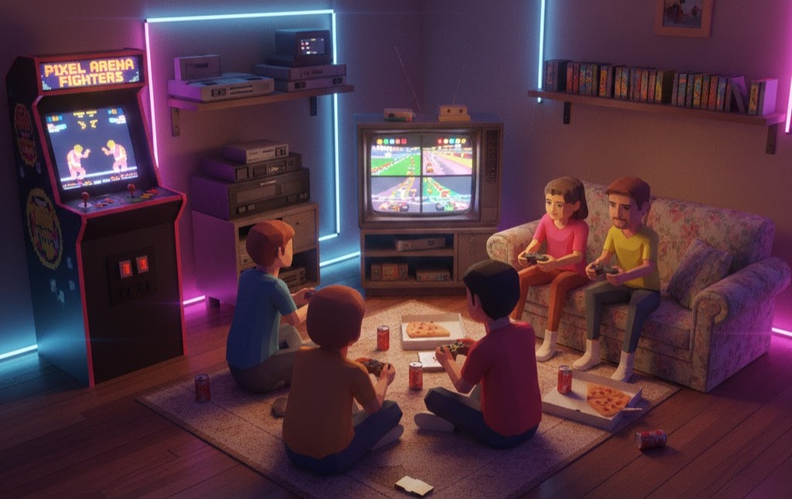

Le rétro gaming désigne la pratique qui consiste à jouer à des jeux vidéo anciens, généralement issus des premières générations de consoles et d’ordinateurs (années 70, 80, 90, début 2000).
Cela peut inclure :
🎮 Jouer sur des consoles d’époque (comme la Nintendo Entertainment System ou la Sega Mega Drive)
🕹️ Rejouer à des jeux cultes comme Super Mario Bros. ou Sonic the Hedgehog
💾 Utiliser des émulateurs sur ordinateur pour reproduire ces anciennes machines
📦 Collectionner des consoles et jeux vintage
Le rétro gaming est apprécié pour la nostalgie, la simplicité des jeux et le style graphique pixel art.
Si tu veux, je peux aussi t’expliquer la différence entre rétro gaming et remake 😉

Une brone d’arcade est une grande machine de jeu installée dans des salles de jeux, cafés ou centres commerciaux.
Les consoles de rétro gaming sont des consoles anciennes (années 70 à début 2000) ou des consoles modernes conçues pour rejouer à des jeux anciens
On peut les classer en 3 grandes catégories :
🕹️ Les consoles d’époque (originales)
🎮 Les consoles “mini” officielles
💻 Les consoles rétro modernes (émulation)